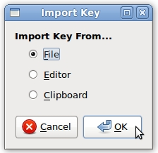

Howto import keys
There are second respectively three steps for importing public keys. We assume, that Bobby wants to import Alice's key, so that he is able to encrypt messages to her.
When Bobby wants to import a key from text-edit field or from clipboard, he first has to copy the key to it.
STEP 1: Open key import dialog
First Bobby opens the import key dialog through the toolbar.

STEP 2: Choose keys
Secondly makes the appropriate selection. If he wants to import a key from editor, he has to paste the key to the text-edit field before. Only if he wants to import keys from file, he has to do the next step, otherwise he's done.

STEP 3: Choose file
Now he chooses the key-file. Afterwards the key appears in the keylist.

Previous: Decrypt a file | Next: Export a public key